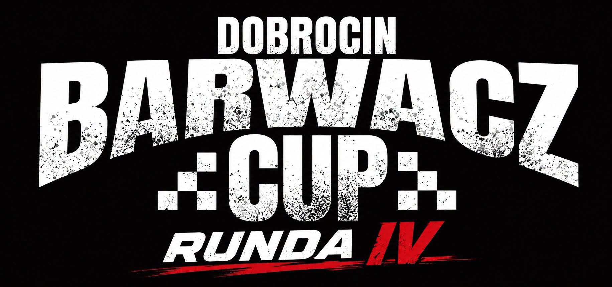
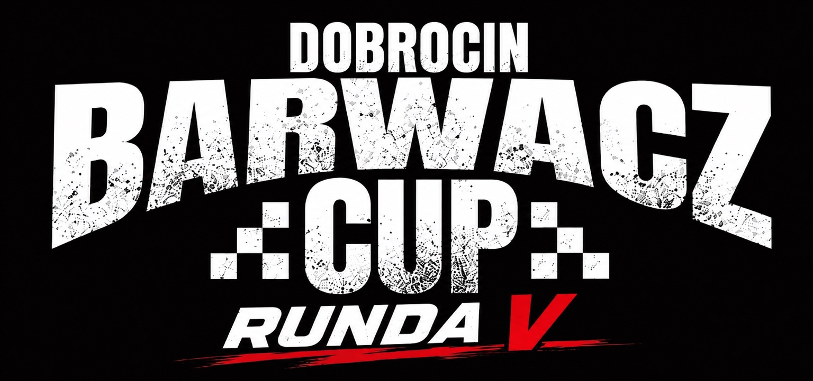
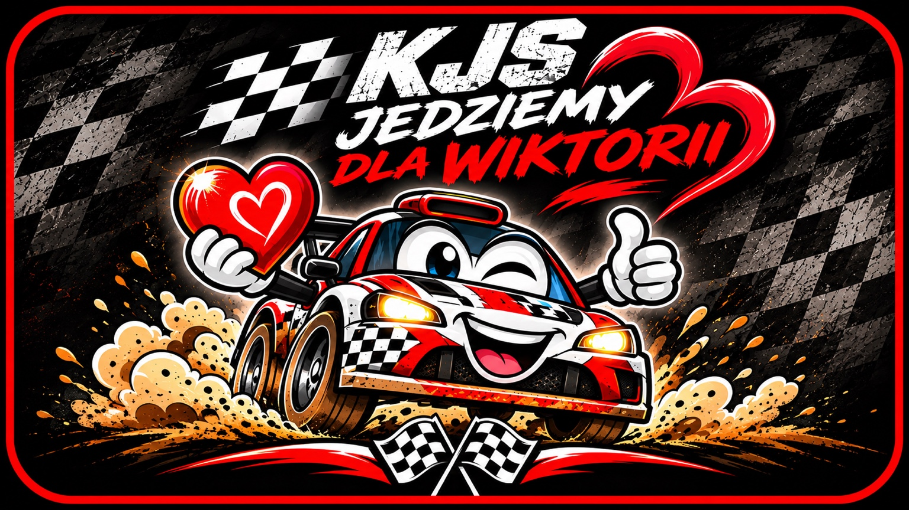

AKR WYNIKI LIVE 2.0
WYNIKI RAJDÓW
Wyniki na żywo, klasyfikacja sezonu i archiwum imprez rajdowych.
ARCHIWALNE IMPREZY
Wybierz rundę, aby zobaczyć jej wyniki.

RUNDA I
ZOBACZ WYNIKI →

RUNDA II
ZOBACZ WYNIKI →
RUNDA III
ZOBACZ WYNIKI →

RUNDA IV
ZOBACZ WYNIKI →

RUNDA V
ZOBACZ WYNIKI →
WKRÓTCE
RUNDA VI — FINAŁ
12 GRUDNIA 2026
RAJD CHARYTATYWNY ❤️
Jedziemy dla Wiktorii

JEDZIEMY DLA WIKTORII ❤️
ZOBACZ WYNIKI RAJDU →
Wyniki poszczególnych rajdów otwierają się
na osobnej podstronie.
Runda VI zostanie udostępniona
po rozegraniu finału.